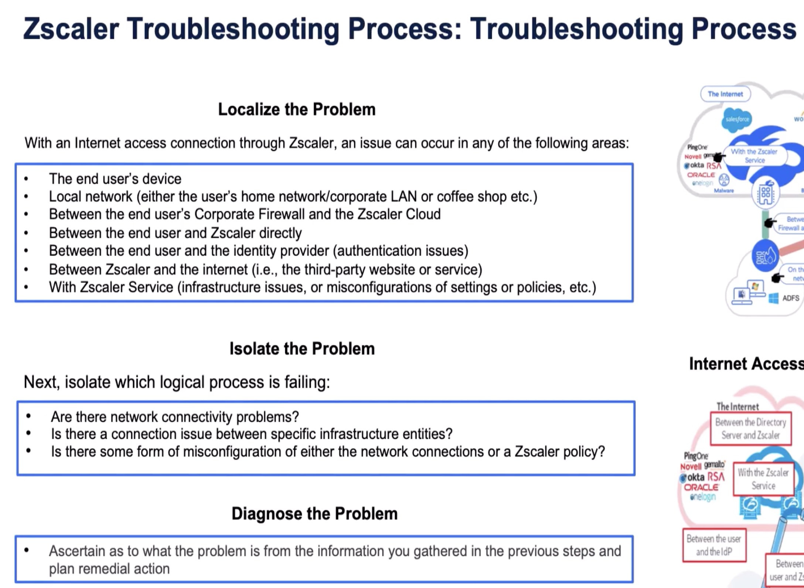
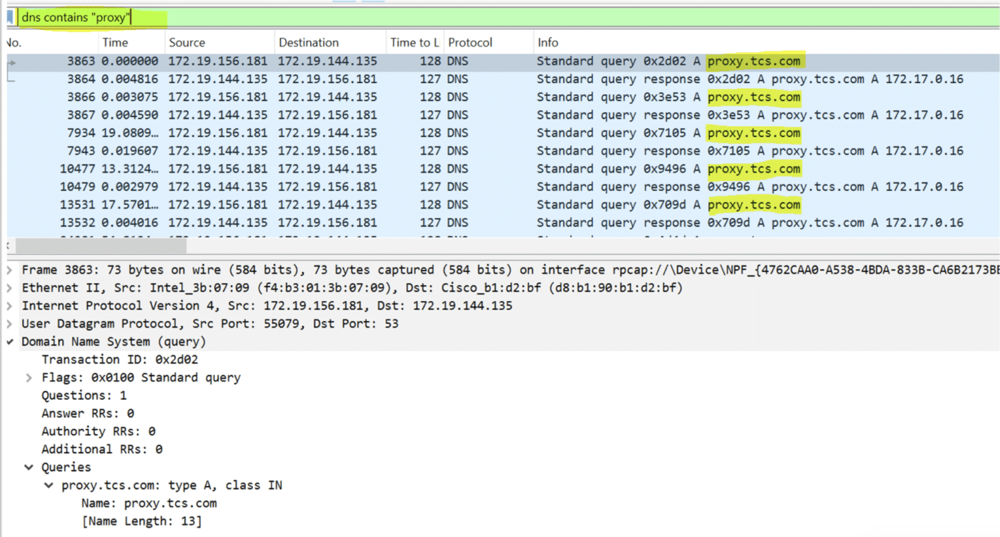
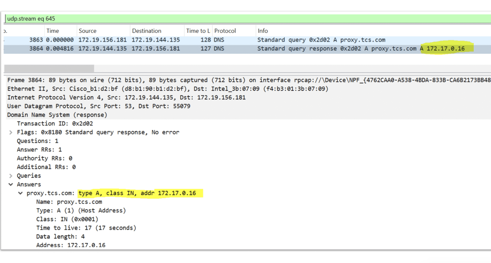
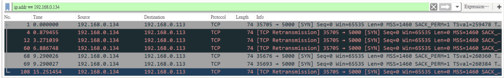
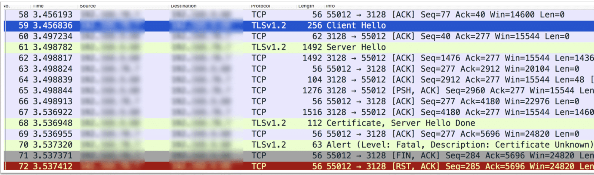
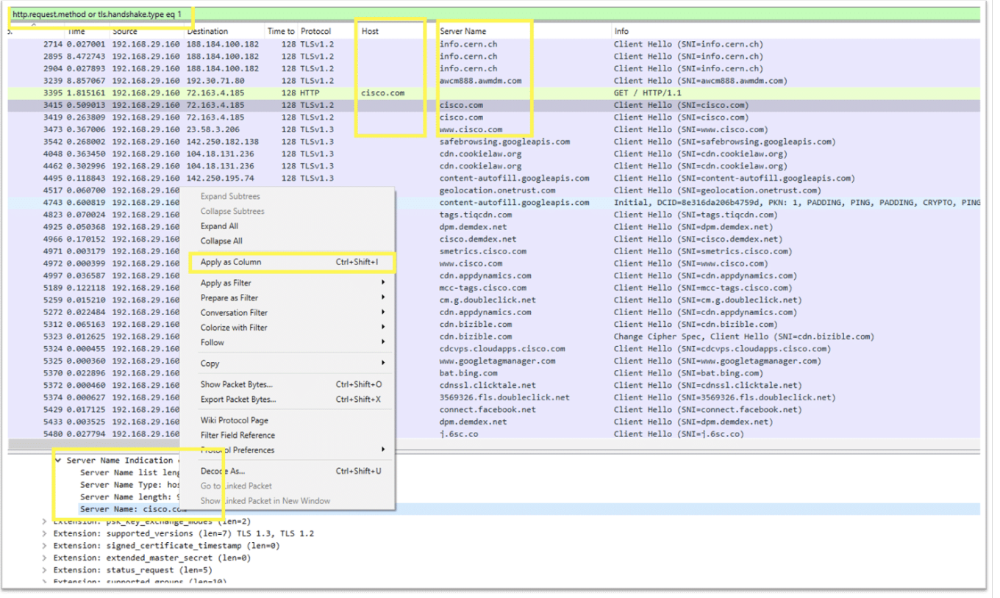

The ZPA + ZIA portion of the end-to-end troubleshooting demonstration — DNS, app segments, support logs, and packet-capture techniques
"For ZPA, the right answer almost always depends on getting DNS right — and the wrong answer hides inside a packet capture the operator never opened."
💭THINK FIRST · LOCALIZE → ISOLATE → DIAGNOSE
Zscaler's troubleshooting process has three named phases and they're the same regardless of which product you're chasing. The whole framework hinges on resisting the urge to start "diagnosing" before you know where the problem lives.
Why are six possible failure domains (device, local network, corporate firewall, ZTE, identity provider, between Zscaler and the destination) listed in Localize rather than diagnosed in a single sweep?
If users complain about a ZPA app failing intermittently, which phase fails most often in practice — Localize, Isolate, or Diagnose — and why?
Q1 — MODEL ANSWER
A "sweep" across six domains is how engineers end up chasing red herrings — they fix something that isn't the issue and the symptom persists. By treating Localize as a deliberate funnel (test each domain in order until you find where the failure is), you constrain the change you'll make in Isolate and save Diagnose for the actual root cause. Each domain has different tools (ping/MTR for device + network, ZPA app status for ZTE, IdP test SAML for identity), so listing them keeps the operator from skipping to a guess.
Q2 — MODEL ANSWER
Localize. Engineers under pressure jump straight to "the IdP is broken" or "DNS is broken" without proving where the failure is, then make changes that don't fix the symptom. ZPA failures specifically are intermittent because they often depend on whether the right App Connector responded, whether the client's local DNS returned the synthetic IP, and whether the user's session token is still valid — three independent variables. Stay disciplined in Localize, document each test, and only move on once you can name the failing domain.
SECTION 1
The Zscaler troubleshooting process applied to ZPA + ZIA
Before drilling into the ZPA-specific use cases, the demonstration anchors on the universal three-phase process. With an Internet access connection through Zscaler, an issue can occur in any of the following areas — Localize asks where; Isolate asks which logical process; Diagnose asks what specifically and produces the fix.

The reference framework. Localize the failing domain (end-user device, local network, corporate firewall, ZTE, identity provider, or ZTE→destination). Isolate the failing logical process (connectivity vs config). Diagnose with the right tool and remediate.
1
LOCALIZE
Identify which of six domains is failing
End-user device · local network (home / corporate LAN / café) · corporate firewall · end-user ↔ Zscaler · end-user ↔ identity provider (auth) · Zscaler ↔ destination (third-party site or service).
2
ISOLATE
Which logical process is failing
Is there a network connectivity problem? Is there a connection issue between specific infrastructure entities? Is there a misconfiguration in either the network or a Zscaler policy?
3
DIAGNOSE
Ascertain what the problem is and plan remediation
Use the gathered evidence (status pages, packet captures, ZCC + ZIA + ZPA logs, IdP test SAML, traceroute) to pin the root cause and execute a remediation plan.
The end-to-end demonstration walks this process through the full stack — Test Connectivity to ZTE → Deploy ZCC → SAML Auth → ZCC Auth → View ZCC Logs → SSL Certs → ZIA Connectivity → ZPA DNS & Connectivity → ZPA AD DNS → ZPA Support & Diagnostic logs → ZCC Logs + Wireshark. This page focuses on the ZPA and packet-capture portions.
🧠
MENTAL NOTE
Three phases — never skip Localize. Six domains to check in Localize: device · local network · corporate firewall · end-user↔Zscaler · end-user↔IdP · Zscaler↔destination. Isolate filters connectivity vs config. Diagnose produces the fix and the remediation plan. Same process for ZIA and ZPA.
ASK A QUESTION
ADD A NOTE
💭THINK FIRST · WHY DNS IS THE FIRST PROOF POINT FOR ZPA
ZPA depends on DNS to do something unusual — when a client queries the FQDN of an internal app, the ZCC intercepts and answers with a synthetic IP from a private range, which is then routed through ZPA. If that lookup doesn't happen, ZPA never enters the path at all.
You see a Wireshark capture filtered by dns contains "proxy" showing the client doing a Standard query for an internal hostname and getting back a Standard query response with an A record. Why does the very existence of those two packets prove ZPA is healthy up to that point, and what does it NOT prove?
What's the difference between application segment misconfiguration and DNS failure when both produce the same end-user symptom ("app doesn't load")?
Q1 — MODEL ANSWER
Those two packets prove the ZCC's DNS interception is working, the client side of ZPA agreed the FQDN matched an app segment, and a synthetic A record was returned for routing. That means ZCC is up, the user is authenticated, and the app segment is configured with the FQDN. What it does NOT prove is whether the corresponding App Connector actually reaches the back-end server, whether the server is up, whether the TLS cert is right, or whether the user has the access policy. DNS is necessary but not sufficient.
Q2 — MODEL ANSWER
App segment misconfig = DNS query gets no synthetic answer because the FQDN doesn't match any segment; the client falls through to its real DNS and sees a public/RFC1918 answer or NXDOMAIN. DNS failure = the client never makes the query reach a resolver at all (network/DNS server down). Tell them apart by looking at the capture: missing query = network/DNS; query with no response or wrong response IP = segment / routing mistake.
SECTION 2
ZPA DNS & Connectivity
The demonstration's ZPA section starts by confirming that when the user accesses an internal application by FQDN, the ZCC intercepts the DNS lookup and answers with a synthetic IP from ZPA's private range — proving the ZPA data path begins correctly. The investigation tool is Wireshark on the client.
The DNS evidence — what to look for
Apply the display filter dns contains "proxy" (or whatever internal FQDN the user is hitting) and you should see paired Standard query and Standard query response packets. The response should resolve to a ZPA synthetic IP (in the private space ZPA owns, e.g. 172.x), not a public IP.

Wireshark filter dns contains "proxy" revealing paired Standard query + Standard query response for proxy.tcs.com. The response returns an A record from the ZPA synthetic range — proof DNS interception is working.
1
LOCATE
User can't reach an internal ZPA app
Confirm via ZCC tray icon that ZIA + ZPA show authenticated and connected. If both green but app fails, focus on ZPA-specific path: DNS → app segment → App Connector → server.
2
ISOLATE
Open Wireshark, filter dns contains "<fqdn>"
Reproduce the failure while capturing. Look for query + response pair. A synthetic IP in the response = ZPA routed the request; a public/RFC1918 IP or NXDOMAIN = app segment doesn't match, or ZCC isn't intercepting.
3
DIAGNOSE
Match symptom to cause
No query at all → ZCC service down or DNS pinned to a non-ZCC resolver. Query but no synthetic IP → FQDN not covered by an app segment, fix the segment in the ZPA portal. Synthetic IP returned but app still fails → connectivity issue at the App Connector or server — proceed to support & diagnostic logs.

Expanded DNS response — Type A, class IN, addr 172.17.0.16. Confirming the response truly contains an A record in ZPA's synthetic range. The TTL (here 17 seconds) is short on purpose so ZPA can rotate App Connectors quickly.
🧠
MENTAL NOTE
ZPA needs a working DNS interception by the ZCC — the ZCC returns a synthetic A record from ZPA's private range when the FQDN matches an app segment. Wireshark filter: dns contains "<fqdn>" or simply dns. Symptoms map: no query = client-side, public IP returned = no app segment match, synthetic IP returned + still failing = App Connector / server.
ASK A QUESTION
ADD A NOTE
💭THINK FIRST · AD DNS THROUGH ZPA
Active Directory uses SRV records and dynamic registration; if the client can't reach a DC over ZPA, single sign-on, GPO updates, and Kerberos token issuance all silently break. Why is this its own troubleshooting section?
If your ZPA app segment covers *.corp.local but the client still can't reach the DC, what's the most likely root cause that has nothing to do with ZPA itself?
Q1 — MODEL ANSWER
The most common cause is that the client's primary DNS server is set to a public resolver (Google 8.8.8.8 / Cloudflare 1.1.1.1) or to an ISP resolver from a previous connection — so AD's SRV queries never reach an internal DNS server, and ZPA's DNS interception only activates for the specific app FQDNs in the segment, not the AD service-discovery namespace. The fix is to ensure either the DNS Search Order has an internal DNS server reachable via ZPA, or the AD discovery FQDNs are explicitly covered by the app segment.
SECTION 3
ZPA — Active Directory DNS
Once basic ZPA DNS interception is confirmed, the demo drills further into Active Directory DNS — because AD's discovery queries (SRV records for _ldap._tcp, _kerberos._udp, etc.) follow different patterns than the simple A-record lookups for an internal web app.
1
LOCATE
SSO / Kerberos / GPO failing while ZPA shows healthy
Filter for both A records and SRV records. If SRV queries don't see a synthetic-IP response from ZPA, AD discovery is bypassing ZPA — usually because the app segment doesn't cover the AD service-discovery FQDNs, or DNS Search Order is wrong.
3
DIAGNOSE
Two fix paths
(a) Add the AD discovery FQDNs (e.g. *.corp.local, the AD domain, _msdcs.<domain>) to a ZPA app segment so ZCC intercepts them. (b) Ensure the client's primary DNS resolver points to an internal DNS reachable through ZPA, not a public resolver. Re-run klist and gpupdate /force to confirm.
i
WHY THE NEXT SECTION EXISTS
Once you've identified that things are working fine for AD DNS but a deeper problem remains, the demonstration moves to Support & Diagnostic logs — because the next step is to instrument and capture, not guess. That's also when you're most likely to need Zscaler Support, so you collect the bundle deliberately.
🧠
MENTAL NOTE
AD DNS over ZPA breaks when app segments don't cover service-discovery FQDNs OR when the client's primary resolver is public/ISP. Diagnostic tools: klist (Kerberos tickets), nltest /sc_query (secure channel), gpupdate /force. Always check both A and SRV records in a Wireshark capture.
ASK A QUESTION
ADD A NOTE
💭THINK FIRST · CLEAN STATE → REPRODUCE → CAPTURE
The demo's support-log workflow is opinionated: clear the logs, restart the network adapter, reproduce the issue, export everything, then attach to the ticket. Why specifically that order?
Why does the instructor insist on restarting the network adapter before reproducing — what does that flush, and what would happen if you didn't?
Q1 — MODEL ANSWER
Restarting the adapter flushes the OS DNS cache, the MUP cache, and any stale system settings — guaranteeing the captured logs reflect a clean re-resolution and re-authentication path rather than cached lookups. Without it, the bundle would include hours of unrelated traffic and probably no actual DNS query for the failing FQDN, leaving Support without the evidence they need.
SECTION 4
ZPA Support & Diagnostic logs — the bundle Support wants
When you can't diagnose locally and need Zscaler Support, the demonstration recommends a deliberate capture flow: clean state, reproduce, export, attach.
1
CLEAN STATE
Clear logs & restart the network adapter
Inside ZCC → clear logs. On the OS, disable/enable the network adapter to clear the DNS cache and MUP cache, then ensure ZCC reconnects cleanly. Now you have a known starting point.
2
REPRODUCE
Trigger the failure
While Wireshark is capturing, hit the failing ZPA app the same way the user does. Capture continues until the failure is reproduced and ZCC writes its journal.
3
EXPORT
ZCC Export Logs → bundle
Click ZCC → Export Logs. The export packages ZCC journal logs, app-connector handshake state, and current configuration into a zip placed in https://tools.zscaler.com/cclogs (password: [Password: ZSPSNCVxqLuFLd] per the demo). Includes a journal_logs.txt from /var/log/messages.
4
PCAP + DIAGNOSTICS
Add a packet capture + ZPA Diagnostics tab
Save Wireshark as .pcap alongside the export bundle. Right-click → Conversation → Filter on TCP for the failing flow. Then go to ZPA → Diagnostics → expand the tree to capture the App Connector + ZPA-side state at the failure time. Submit all four to the case: ZCC export, OS journal, Wireshark, ZPA diagnostics.
Bundle for ZPA Support = ZCC Export Logs (uploads to tools.zscaler.com/cclogs) + OS journal logs + Wireshark pcap + ZPA Diagnostics tab snapshot. Always clear state and restart the network adapter before reproducing — otherwise the bundle is full of stale cache hits and no real DNS query for the failing FQDN.
ASK A QUESTION
ADD A NOTE
💭THINK FIRST · TCP RETRANSMITS & SSL HANDSHAKE
In a healthy session you expect SYN → SYN-ACK → ACK → Client Hello → Server Hello → ... → ACK → application data. When the SYN-ACK never arrives or you see five back-to-back retransmissions, that's a specific story about where the path failed.
The pcap in the demo shows multiple TCP retransmissions to the same destination with no SYN-ACK. Why is that pattern almost always a firewall or routing problem and almost never an application-layer issue?
If the SSL handshake makes it as far as Server Hello Done but then immediately closes with an Encrypted Alert + RST, what's the first place you look?
Q1 — MODEL ANSWER
No SYN-ACK means TCP layer 4 never completed handshake — the application stack on the destination never even saw the request. By definition that's a network-level block: a firewall dropping SYN, a routing black hole, or the destination IP simply not listening on the port. Application-layer issues (auth, content, certificates) cannot manifest before SYN-ACK is back. So retransmits-with-no-SYN-ACK = pull a network engineer in, not a developer.
Q2 — MODEL ANSWER
An Encrypted Alert + RST after a successful TLS handshake almost always means certificate validation failure — the client received the cert chain in Server Hello but didn't trust it, or hostname mismatch, or the cert expired. First place to look is the certificate chain in the Server Hello packet (and the CN/SAN on the leaf), then confirm the client trust store contains the issuing CA. For Zscaler, this is usually the Zscaler root CA missing from the client's trust store.
SECTION 5
ZCC logs, Wireshark, and packet-level diagnosis
The final ZPA section of the demo walks through reading Wireshark output for the two most common failure patterns: TCP retransmissions (network failure) and SSL handshake failures (certificate / trust failure).
Pattern 1 — TCP retransmissions, no SYN-ACK

A series of TCP retransmissions of the same SYN to the same destination. No SYN-ACK is ever seen back. Layer 4 handshake never completes — the destination port isn't listening or a firewall is dropping the SYN. Application-layer can be ruled out instantly.
Filter: tcp.analysis.retransmission isolates the retransmits.
Apply ip.addr == <destination> to narrow to the failing flow.
Check RST TTL: a TTL ~62 indicates an intermediate firewall injecting the reset (~64 default - 2 hops). A TTL of ~64 indicates the destination itself reset.
Pattern 2 — Full TLS handshake then immediate close

Client Hello → Server Hello → Certificate → Server Hello Done, then suddenly Encrypted Alert + FIN/RST. The handshake completed mechanically but the client rejected something during validation — certificate not trusted, hostname mismatch, or expired.
Filter: tls.handshake and follow the TCP stream (right-click → Follow → TCP Stream).
Expand the Certificate packet → check Subject CN, SAN, NotAfter, and the issuing CA chain.
For Zscaler-inspected traffic, ensure the Zscaler root CA is in the client's trust store; otherwise every inspected TLS will fail this way.
Following the TCP stream

Right-click → Follow → TCP Stream pulls the entire conversation into a single window in chronological order. Indispensable for HTTP / TLS troubleshooting because you can see request/response pairs without scanning thousands of packets.
i
THREE FILTERS EVERY ZSCALER OPERATOR SHOULD MEMORISE
http.request.method · tls.handshake.type eq 1 (Client Hello only) · ip.addr eq x.x.x.x. Add the Host column for HTTP and the Server Name (SNI) column for TLS so you can scan for the failing FQDN without expanding each packet.
Reading a Wireshark TCP/TLS capture is like inspecting a phone call recording. SYN + SYN-ACK + ACK is the dial tone and "hello." Client Hello → Server Hello → Certificate is each side showing ID before the real conversation. SYN with no SYN-ACK is the line dead before anyone picks up — that's a phone-system fault, not a conversation fault. Server Hello Done followed by an angry click is "I don't trust your ID, goodbye" — somebody handed the wrong card and the listener hung up.
📷 A1.png — add this image to the folder
Three-panel cartoon infographic styled like a phone-call inspection diagram. Panel 1 labelled "Healthy Call": two friendly characters on classic telephones with a clean connecting line, speech bubble showing "SYN · SYN-ACK · ACK · Client Hello · Server Hello · Certificate · Hi!". Panel 2 labelled "No SYN-ACK = Dead Line": left character speaks into a phone but the wire is cut by a grumpy firewall character holding scissors; bubble "SYN, SYN, SYN..." then silence; small caption "TTL ~62 = intermediate". Panel 3 labelled "Cert Rejected = Hung Up": both characters on phones, right one is examining an ID card with a frown and slamming the phone, speech bubble "Encrypted Alert + RST"; small caption "Missing Zscaler root CA". Friendly modern cartoon style, minimal text labels only where needed, educational infographic feel, modern tech-analogy aesthetic
ASK A QUESTION
ADD A NOTE
SECTION 6
Wireshark recipe book — the seven appendices
The lesson closes with seven short Wireshark / packet-capture recipes that appear repeatedly in real ZPA + ZIA cases. Memorise the filter strings and the answers fall out of the capture quickly.
Check for SYN packets sent to a specific IP with no SYN-ACK back. Retransmits to the same destination = layer-4 block. RST with TTL ~62 = intermediate firewall.
APPENDIX 3
Follow UDP stream (DNS)
Filter dns contains "<fqdn>", right-click on the query packet → Follow → UDP Stream. Useful for AD SRV record troubleshooting.
APPENDIX 4
SSL issues in pcap
Filter tls.handshake.type eq 1 + frame contains "xyz.com". Follow TCP stream; look for cert errors or Encrypted Alert immediately after handshake; connection closed with RST or FIN-ACK right after SSL handshake = trust failure.
APPENDIX 5
Download / page load time
Apply Appendix 1 filter for the failing page or a 100 MB test download. Follow TCP stream. Statistics → Capture File Properties → Statistics → Displayed: observe time taken and average bits/s with vs without Zscaler.
APPENDIX 6
Client performance via Task Manager
Task Manager → Performance tab. Download a 100 MB file (azurespeed.com/Azure/Download). Monitor throughput, CPU, Memory, Disk with vs without Zscaler.
APPENDIX 7
Page load time via browser DevTools
Ctrl+Shift+I → Network tab → start trace, open the impacted site. Click a request → Timings tab. Record DNS lookup time, SSL time, response time. Compare with/without Zscaler.
Performance-issue triage tree (when users say "it's slow")
The lesson lays out a triage checklist before reaching for a pcap. Walk these in order:
Is this a new issue or an existing one?
Are other users affected?
What's the common pattern among them?
What kind of internet link is the user connected to — ethernet or Wi-Fi?
Is the user accessing from a single location, or moving between locations (home / office / hotel)?
Is the problem present regardless of location, or specific to a single location?
Is the problem specific to a single application, single connector group, or present everywhere over ZPA?
Does the problem persist when ZPA is not connected (rule ZPA in or out)?
Is there a different method of accessing the same application that shows similar symptoms?
Are there more than one internet link present on the site?
Is the problem present if the user is connecting over an alternate internet link?
Performance path-isolation troubleshooting tips
If the issue still isn't pinned, walk these three paths with the indicated tools:
1
PATH 1
Client to ZPA Service Edge
Run a ping test · run an ICMP MTR · test internet throughput by running a speed test from a server in the vicinity of the Service Edge's geographic location · collect a packet capture from the ZCC while accessing the app.
2
PATH 2
App Connector to ZPA Service Edge
Run a ping test · run an ICMP MTR from the App Connector toward the ZPA Service Edge.
3
PATH 3
App Connector to server delivering the application
Run a ping test · run an ICMP MTR · collect a packet capture from the App Connector while accessing the application. Compare round-trip times across the three paths to localize.
🧠
MENTAL NOTE
Seven appendices = seven Wireshark recipes for ZPA + ZIA cases. Performance path triage = three independent paths (Client → SE, AC → SE, AC → Server) each tested with ping + MTR + pcap. Always answer the "new vs existing", "single vs many users", "one location vs many" questions before reaching for the capture tool.